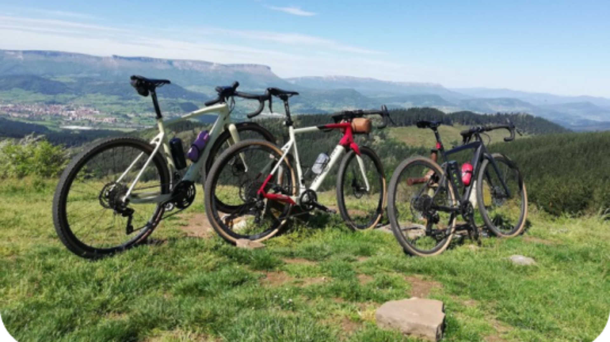
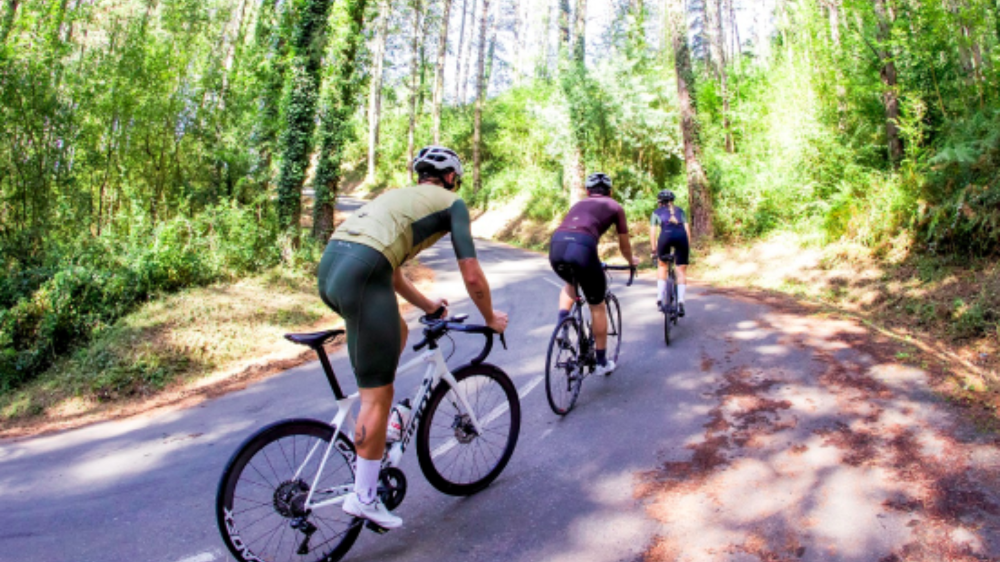
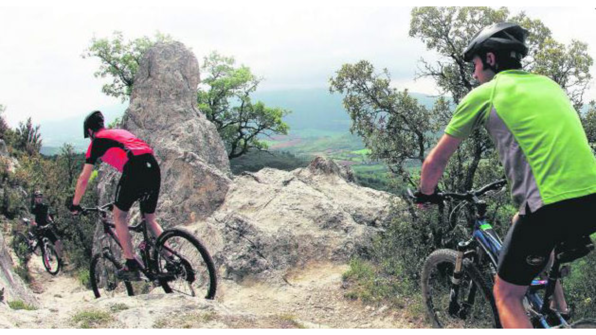

- 
- 
- 
Noticias
🏆Equipo Cortizo y Martín Rey:líderes nacionales sub-23
El Equipo Cortizo, dirigido por Marcos Serrano, cerró la temporada como el mejor conjunto sub-23 del país, acumulando 26 victorias en un año excepcional. + info
Jonathan Lastra reforzará el Euskaltel-Euskadi en 2026
El ciclista bilbaíno Jonathan Lastra (1993) vestirá el maillot naranja del Euskaltel-Euskadi en la temporada 2026, tras su paso por el WorldTour con el Cofidis. Con su fichaje, la... (30/10/2025) + info